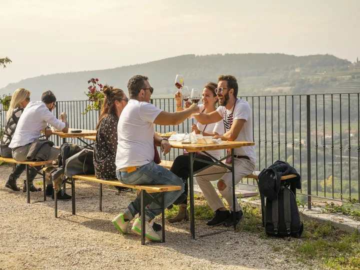

dom 11 ott
Val Polis Cellae
Immaginate di trovarvi in una Domenica d'autunno fra i vigneti che cominciano ad assumere il caratteristico colore giallo-arancione con il tepore di una giornata di metà Ottobre.
 Indicazioni
Indicazioni
- Costi e prenotazioni
- Costo non indicato · Prenotazione non indicata
- Programma
- Programma da verificare. Apri la fonte ufficiale per orari e possibili aggiornamenti.
- In caso di maltempo
- Nessuna indicazione specifica pubblicata.
- Note
- Acquisito automaticamente dalla fonte.
L’EVENTO
Descrizione completa
Immaginate di trovarvi in una Domenica d'autunno fra i vigneti che cominciano ad assumere il caratteristico colore giallo-arancione con il tepore di una giornata di metà Ottobre.
Immaginate di trovarvi in alcune fra le migliori cantine della Valpolicella, dove vengono custoditi con cura i segreti per la produzione degli eccellenti vini rossi locali, e allo stesso tempo essere circondati da opere d'arte mentre degustate un calice di Valpolicella o di Recioto.
Questo è il Val Polis Cellae , organizzato dalla Strada del Vino Valpolicella per Domenica 11 Ottobre!
6 percorsi immersi nelle vallate della Valpolicella, alla scoperta delle peculiarità che ognuna riserva al vino e che ogni cantina valorizza con orgoglio.
Dalle 10:00 alle 18:00 le 27 cantine partecipanti terranno aperte le porte , per appassionati, curiosi, enoturisti che potranno visitare le aziende e assaggiarne i prodotti, godere di momenti d'arte e cultura ambientati tra cortili, bottaie e sale di degustazione dove artisti e artigiani locali esporranno le loro opere.
Ogni azienda aderente all'iniziativa sarà lieta di offrire una visita guidata e una degustazione dei propri vini della Valpolicella.
Sarà anche possibile pranzare con piatti tipici e prodotti del territorio, serviti in collaborazione con i ristoranti locali, acquistare i vini o altri prodotti.
Un evento da non perdere dove arte, natura e sapori saranno protagonisti di questo meraviglioso territorio: la Valpolicella.
IL PROGRAMMA
Programma e orari
Appuntamenti raccolti dalle fonti elencate. Dove manca un orario, non è ancora disponibile in questa scheda.
Programma pubblicato
- 2026-10-11 — 2026-10-11 · 10:00:00
INFORMAZIONI UTILI
Prima di partire
- Controllare la fonte prima di partire.
ORGANIZZAZIONE